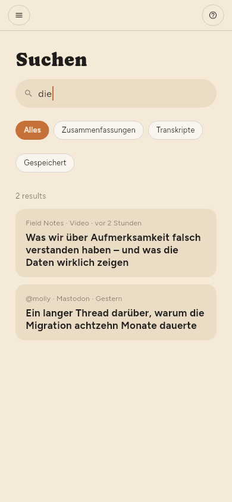

← Zusammenfassungen · Inhalt · Dinge aufbewahren →
Dinge finden
Suchen im Regal, oder /.
Die Suche umfasst Titel, Artikeltext und Video-Transkripte. Ein Treffer im Transkript ist ein Moment — er nennt die Zeit und springt beim Öffnen dorthin.

Das Textfeld im Filterfeld ist etwas anderes: Es grenzt die Liste vor Ihnen ein, statt eigene Ergebnisse zu öffnen. Es durchsucht den Titel, den Namen der Quelle und die Zusammenfassung — die Suche liest zusätzlich Artikeltext und Transkripte.

Jeder Filter fragt die ganze Bibliothek, nicht nur den Teil auf dem Bildschirm. Ein Wort, ein Schlagwort, Ungelesen, Nicht zusammengefasst, ein Feed, eine Art: Jeder wird aus dem Speicher beantwortet, die Zahl über der Liste ist also die Zahl dessen, was es gibt. tag:linux findet alles mit diesem Schlagwort, egal wie alt; zwei Schlagwörter grenzen ein, statt zu erweitern, und ein Wert mit Leerzeichen steht in Anführungszeichen: tag:"machine learning".
Schlagwörter (nur Premium)
Die Schlagwörter eines Artikels sind die Themen, die seine Zusammenfassung herausgegriffen hat, und Sie können sie ändern: Die Chips unter dem Titel im Leser fügen hinzu und entfernen, und ein Klick auf eines zeigt alles, was es trägt.
Auch eine Quelle lässt sich in ihrem Feld verschlagworten — und ein Artikel wird nach den Schlagwörtern seiner Quelle ebenso gefiltert wie nach seinen eigenen. Ein Schlagwort am Feed ordnet also die hundert Artikel, die schon darin sind, und nicht nur die, die als Nächstes kommen.
Jedes verwendete Schlagwort steht unter Schlagwörter im Regal, mit dem, was es enthält. Ein Klick darauf grenzt die Liste ein, ein zweiter Klick hebt das wieder auf.